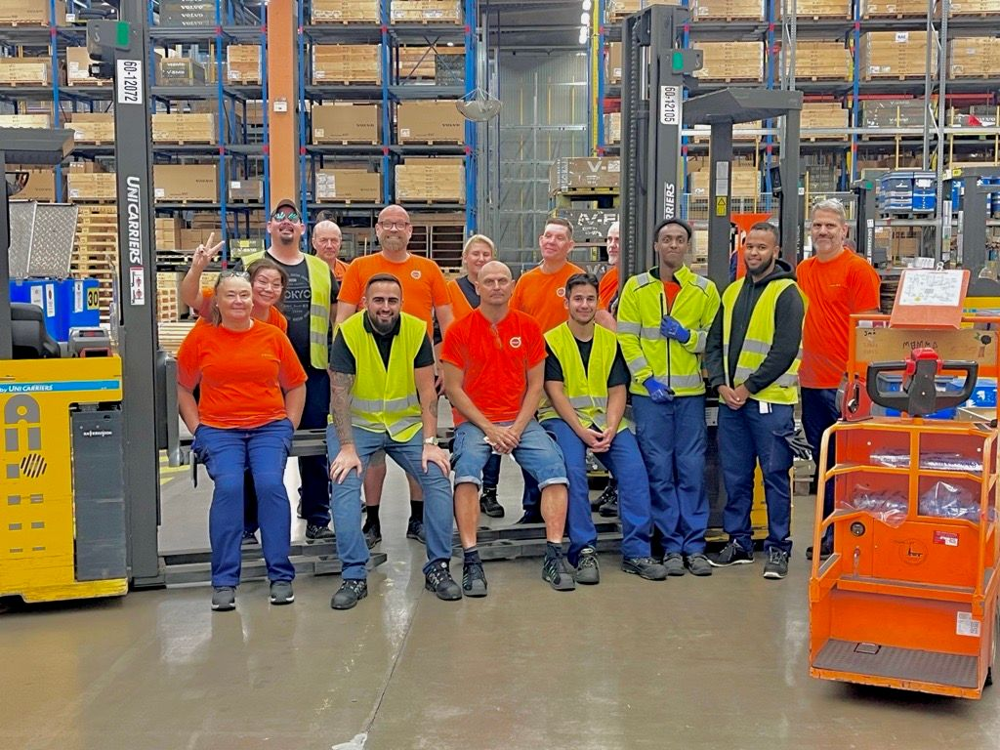

Ideellt engagemang, Nylöse sportcenter (Brottning)
2013 — 2019
Jag engagerade mig ideellt i föreningen under flera år och blev ledamot när jag fyllde 18 år.
Mellan 2015 och 2019 var jag även tränare för barn och ungdomsgrupper.
I rollen planerade och genomförde jag träningar samt bidrog till föreningens verksamhetsutveckling.
Akademiskt och arbetslivserfarenhet
2018
Avslutade gymnasiestudier med inriktning naturvetenskap.

2020
Genomförde utbildning till ordningsvakt.
2017-2023
Teamleader på Volvo Cars.
Jag hade ansvar för den dagliga produktionen tillsammans med 16 medarbetare och fungerade även periodvis som tillförordnad chef.
I tjänsten ansvarade jag även för import till centrallager från Kina, USA och övriga leverantörer i Europa.
Detta omfattade koordinering av transporter via lastbil, container och flyg, samt löpande kontakt med produktion.

2023
Påbörjade min kandidat på programmet "IT-ingenjör - Digital infrustruktur och cybersäkerhet", förde gruppens talan och blev klassrepresentant.